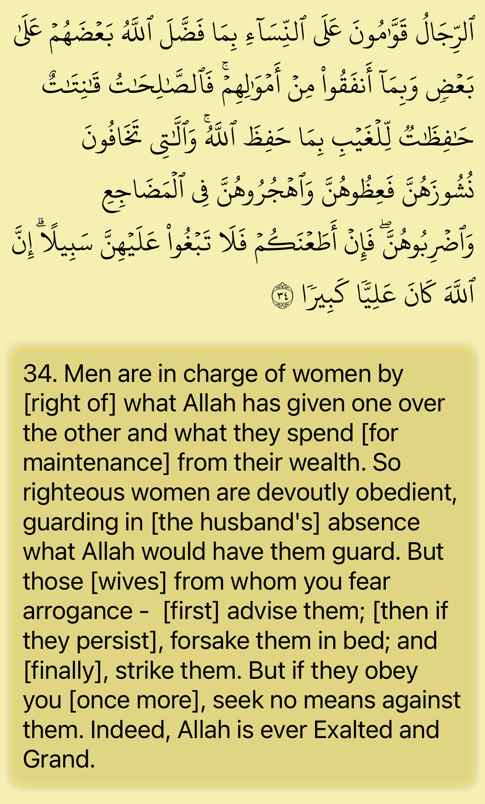
Command for physical abuse? 🔽
!!!
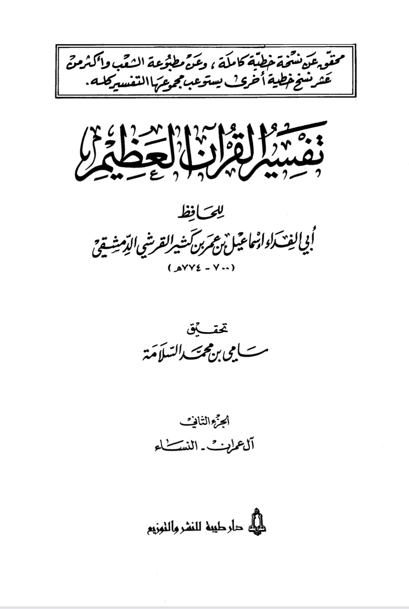
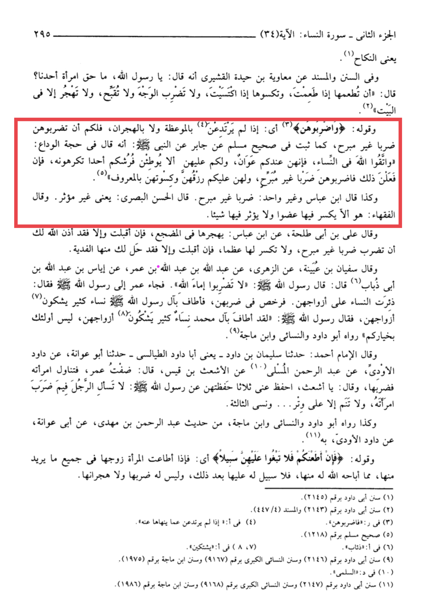
Ibn Kathir said:
قَالَ الْحَسَنُ الْبَصْرِيُّ يَعْنِي غَيْرَ مُؤَثِّرٍ قَالَ الْفُقَهَاءُ هُوَ أَلَا يَكْسِرَ فِيهَا عُضْوًا وَلَا يُؤَثِّرَ فِيهَا شَيْئًا
Daraba (“ضَرَبَ“) means a striking without a trace Bruce. The jurists said: It may not break limbs and it may not leave marks of any sort
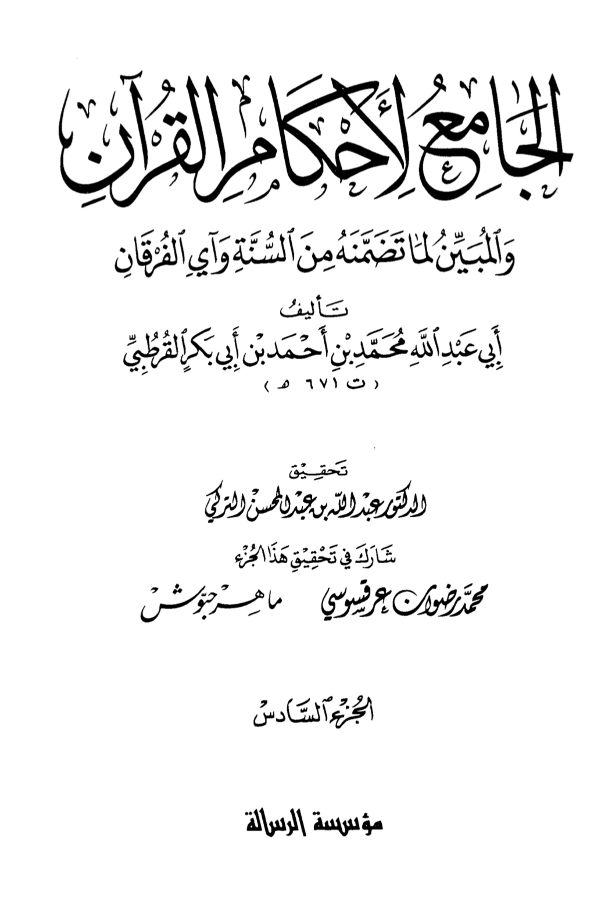
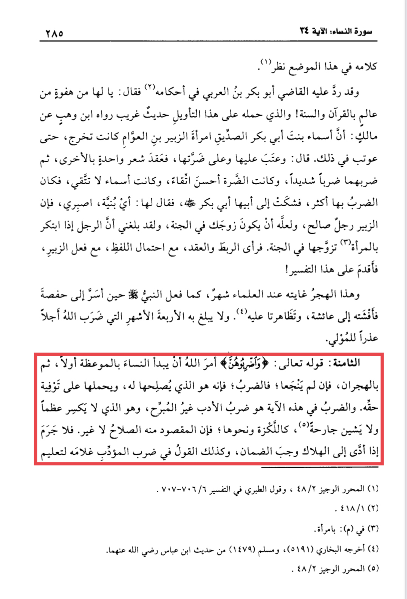
Al Qurtubi said:
وَالضَّرْبُ فِي هَذِهِ الْآيَةِ هُوَ ضَرْبُ الْأَدَبِ غَيْرُ الْمُبَرِّحِ وَهُوَ الَّذِي لَا يَكْسِرُ عَظْمًا وَلَا يَشِينُ جَارِحَةً كَاللَّكْزَةِ وَنَحْوِهَا فَإِنَّ الْمَقْصُودَ مِنْهُ الصَّلَاحُ لَا غَيْرَ
The word Daraba (“ضَرَبَ“) in this verse is a striking of discipline without severity, which may not break bones or disgrace with injuries as if it were a clenched first, and so on.
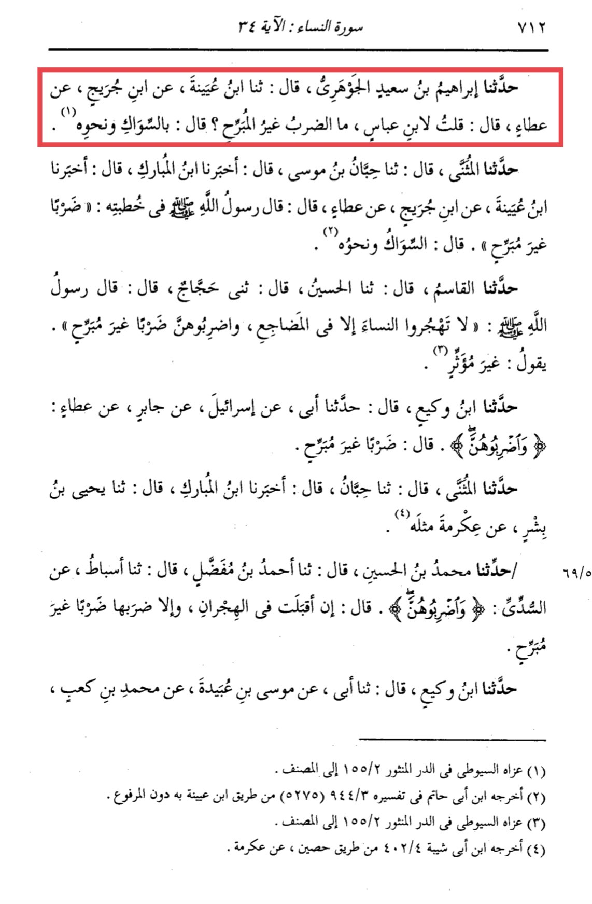
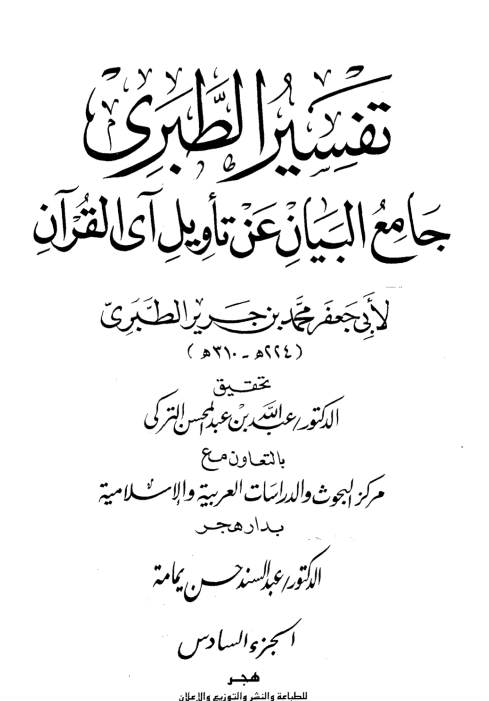
Tafsīr al tabarī:
I asked Ibn Abbas:
What is the hitting that is Ghayr Al-Mubarrih?’ He replied with (miswak)
And they take This ruling from this hadith of the prophet where he was referring to a symbolic beating.🔽🔽
He mentioned a story in his narration and he (the Prophet) said: And indeed I order you to be good to the women, for they are but captives with you over whom you have no power than that, except if they come with manifest Fahishah (evil behavior). If they do that, then abandon their beds and beat them with a beating that is not harmful.
And if they obey you then you have no cause against them. Indeed you have rights over your women, and your women have rights over you. As for your rights over your women, then they must not allow anyone whom you dislike to treat on your bedding (furniture), nor to admit anyone in your home that you dislike. And their rights over you are that you treat them well in clothing them and feeding them.”
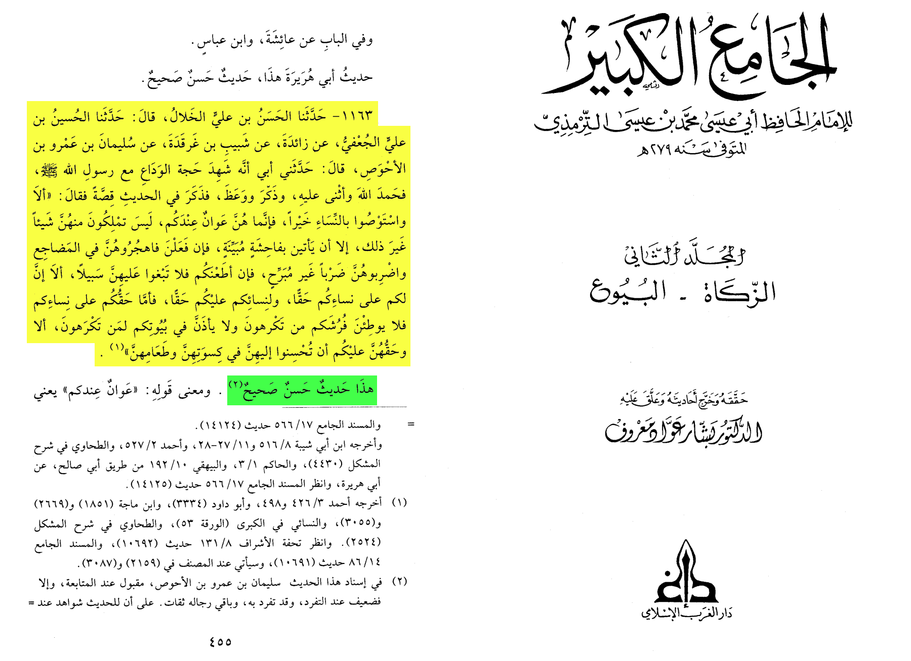
So the scholars explain it to being a symbolic beating/striking since this “beating” won’t cause any pain or leave marks of any sort.
But regardless we should all be like the prophet SWT since God told us he is a great moral example for us to follow, thus we should treat anyone the ways he treated them
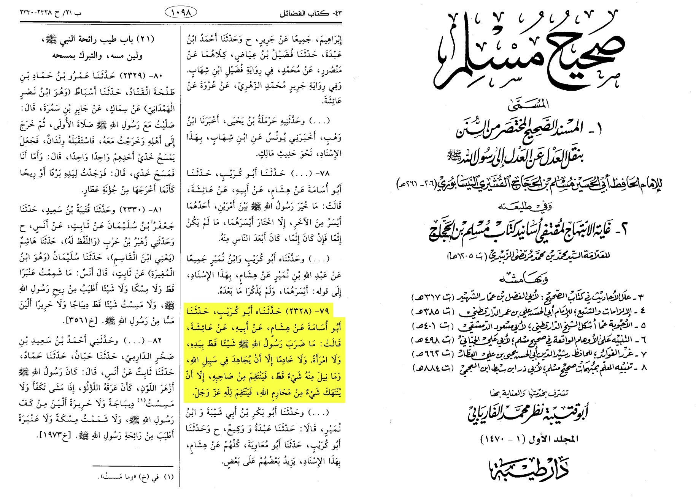
A'isha reported that Allah's Messenger (ﷺ) never beat anyone with his hand, neither a woman nor a servant, but only, in the case when he had been fighting in the cause of Allah and he never took revenge for anything unless the things made inviolable by Allah were made violable; he then took revenge for Allah, the Exalted and Glorious.
There is a hadith mentioned in Sunan Abi dawud 2146 where the prophet allowed beating however lets look at the sharh
in Awn al-ma’boud (p.1008): “in the sharh al-sunnah of the fiqh of beating women that the prophet forbade beating them before the verse was revealed then he allowed beating them because women became rebellious then when the verse came down to him it is not painful beating (like a nudge like al-Qurtubi said In his tafsir)”
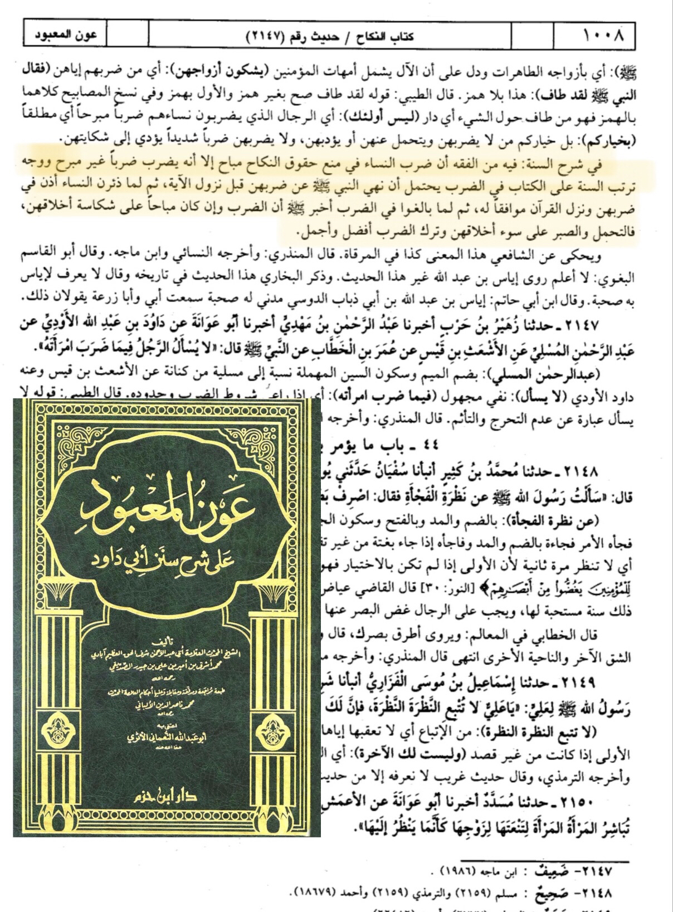
Even if it permissible for discipline, it is still better to avoid it.
Source: Sahih Muslim Bi-Sharh An-Nawwai
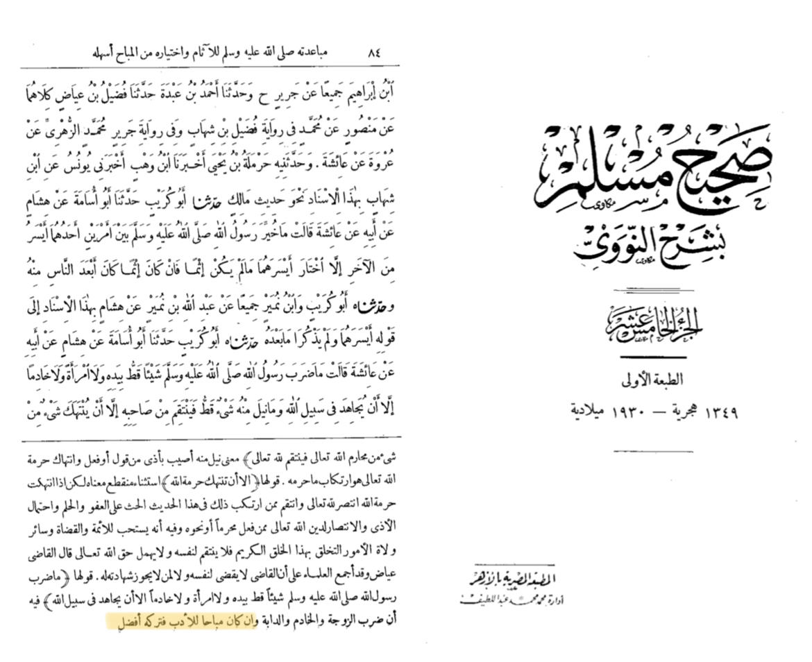
Sheikh al-Islam Imam an-Nawawi comments on a Hadith of the prohibition of hitting someone in the face by saying it includes the wife , meaning if someone hits his wife face even if he thinks he is exercising 4:34 he is sinful.
(link source):Sheikh al-Islam Imam an-Nawawi comments on a Hadith of the prohibition of hitting someone in the face by saying it includes the wife , meaning if someone hits his wife face even if he thinks he is exercising 4:34 he is sinful.
(link source):https://al-maktaba.org/book/1711/3657#p3
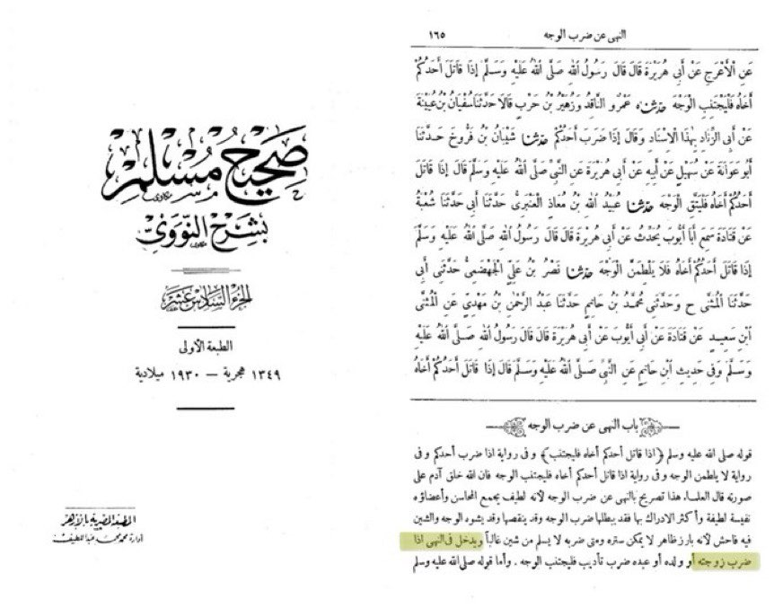
This is what Hasan al-Basri said who is a student of over 100 companions of the Prophet , it should not even leave a trace
The Prophet ﷺ explicitly showed his disapproval to hitting , an example of this is when he said: “Many women have come to the family of Muhammad complaining about their husbands striking them. These men are not the best among you.”
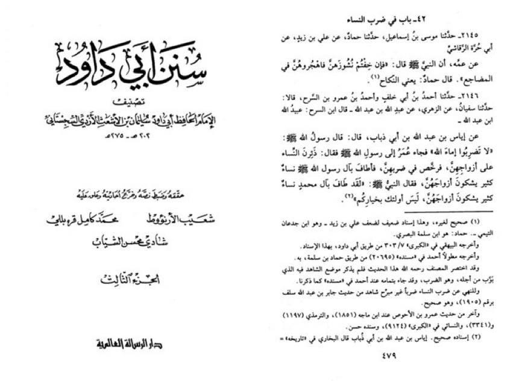
Fatima bint Qais (رضي الله عنها) a female companion of the Prophet ﷺ wanted to get married after she divorced , the Prophet ﷺ disapproved of a man called Abu Jahm because he physically assaults women.
Imam Fakhruddin al-Razi the Shafi’i jurist quotes Imam al-Shafi’i who said that “hitting” is allowed but leaving it is better
(source): https://al-maktaba.org/book/23635/1741#p3
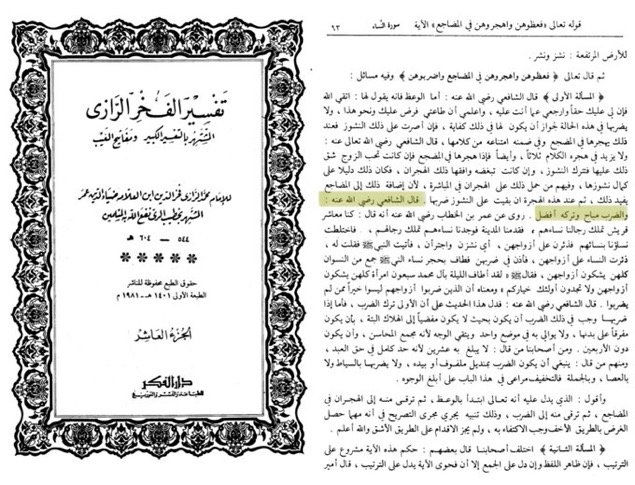
If a man was to physically assault his wife and she can no longer be with him what would happen?
The Prophet ﷺ divorced a woman in his time who she complained of him(her husband) physically assaulting her.
(source): https://al-maktaba.org/book/33769/3023#p1
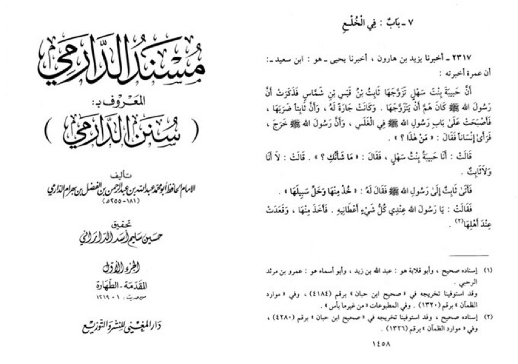
Ibn Aadil Al Hanbali in his Tafsīr:
“Allahs words (“ضَرَبَ“). means, a beating in a manner which is non violent & doesn’t dishonor her.
‘Ata added and said:This is hitting with miswak.
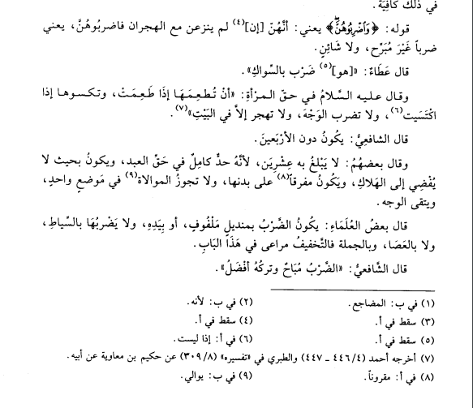
the ulma said: Beating is done with a rolled up handkerchief or with hand, and he should not strike with a whip, or a stick, and in general, leniency is taken into account in this matter Imam Shafi’i said: Beating is allowed although avoiding it is better"
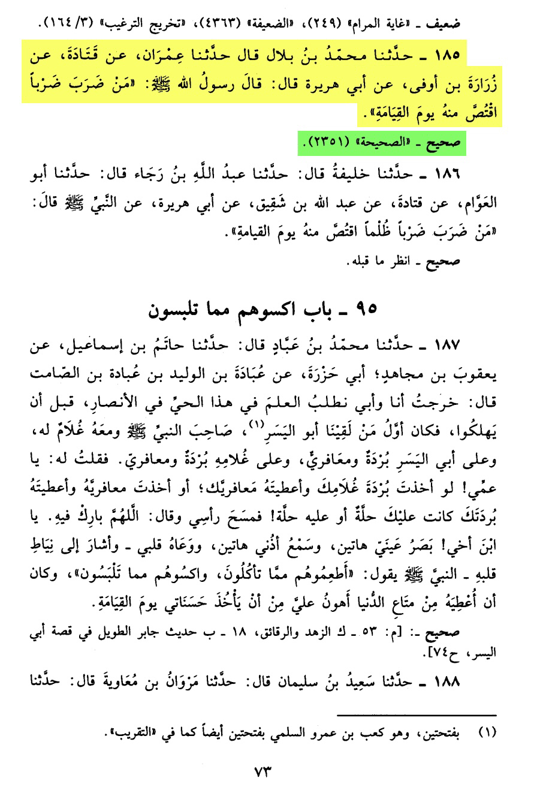
Rasuallah said: Whoever strikes someone will receive retribution for it on the Day of Resurrection.
If husbands beats his wife unjustly or harms her, she has right to qisa s and get divorce.
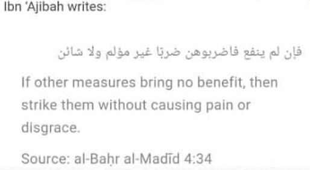
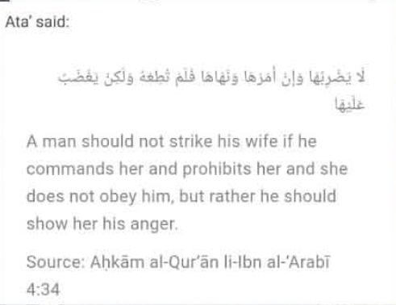
https://m.youtube.com/watch?v=HGCSy1UQusY
 Imam Fakhruddin al-Razi the Shafi’i jurist quotes Imam al-Shafi’i who said that “hitting” is allowed but leaving it is better
(source): https://al-maktaba.org/book/23635/1741#p3
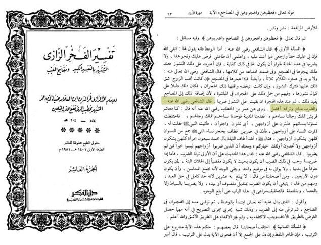
If a man was to physically assault his wife and she can no longer be with him what would happen?
The Prophet ﷺ divorced a woman in his time who she complained of him(her husband) physically assaulting her.
(source): https://al-maktaba.org/book/33769/3023#p1
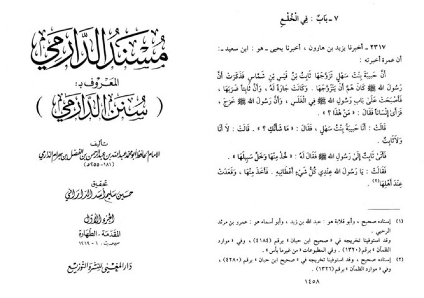
Ibn Aadil Al Hanbali in his Tafsīr:
“Allahs words (“ضَرَبَ“). means, a beating in a manner which is non violent & doesn’t dishonor her.
‘Ata added and said:This is hitting with miswak.
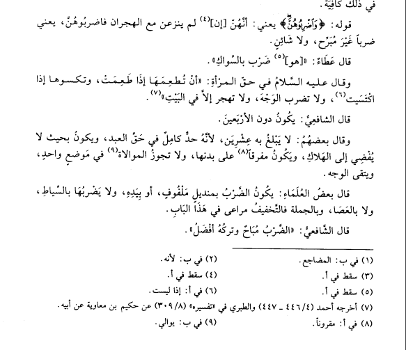
the ulma said: Beating is done with a rolled up handkerchief or with hand, and he should not strike with a whip, or a stick, and in general, leniency is taken into account in this matter Imam Shafi’i said: Beating is allowed although avoiding it is better"
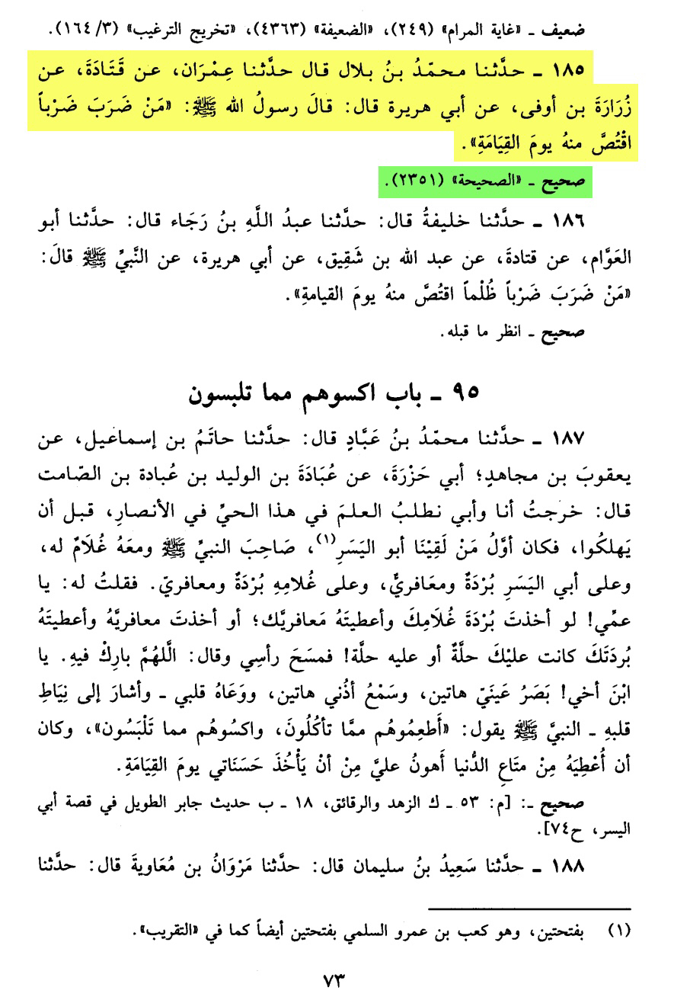
Rasuallah said: Whoever strikes someone will receive retribution for it on the Day of Resurrection.
Imam Fakhruddin al-Razi the Shafi’i jurist quotes Imam al-Shafi’i who said that “hitting” is allowed but leaving it is better
(source): https://al-maktaba.org/book/23635/1741#p3
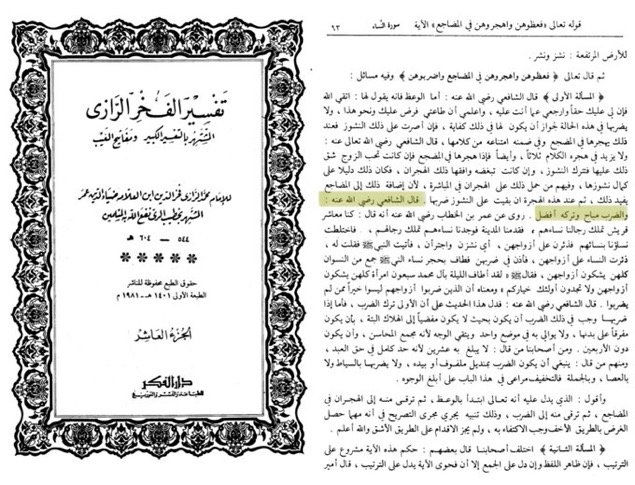
If a man was to physically assault his wife and she can no longer be with him what would happen?
The Prophet ﷺ divorced a woman in his time who she complained of him(her husband) physically assaulting her.
(source): https://al-maktaba.org/book/33769/3023#p1
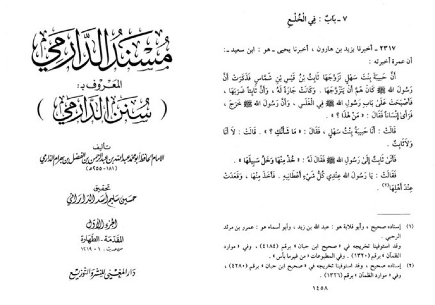
Ibn Aadil Al Hanbali in his Tafsīr:
“Allahs words (“ضَرَبَ“). means, a beating in a manner which is non violent & doesn’t dishonor her.
‘Ata added and said:This is hitting with miswak.
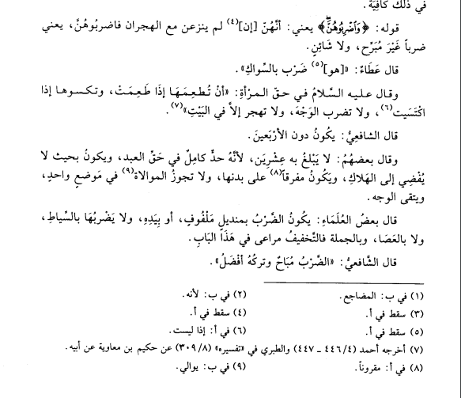
the ulma said: Beating is done with a rolled up handkerchief or with hand, and he should not strike with a whip, or a stick, and in general, leniency is taken into account in this matter Imam Shafi’i said: Beating is allowed although avoiding it is better"
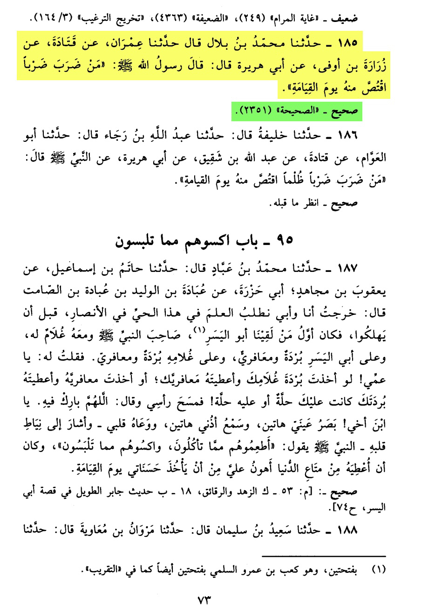
Rasuallah said: Whoever strikes someone will receive retribution for it on the Day of Resurrection.
 If husbands beats his wife unjustly or harms her, she has right to qisa s and get divorce.
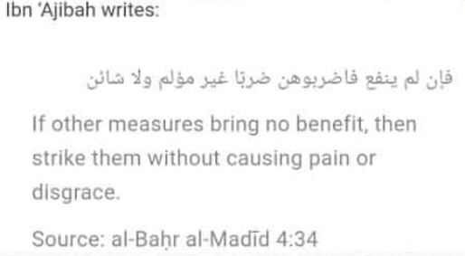
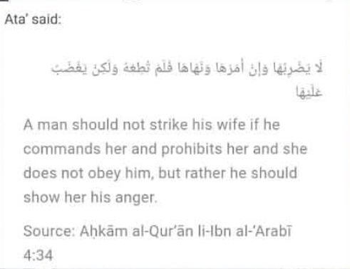
https://m.youtube.com/watch?v=HGCSy1UQusY
If husbands beats his wife unjustly or harms her, she has right to qisa s and get divorce.
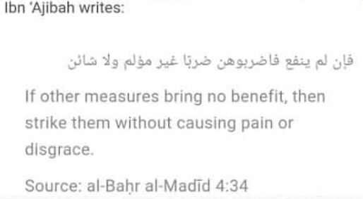
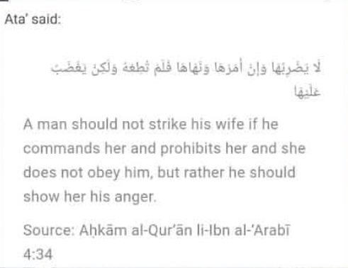
https://m.youtube.com/watch?v=HGCSy1UQusY